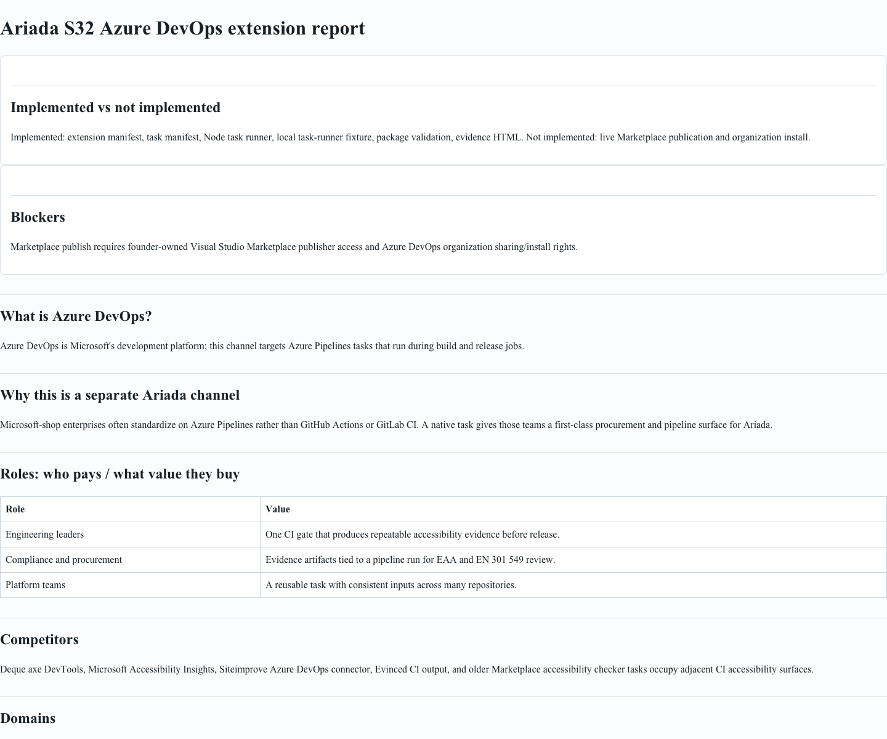

Ariada S32 Azure DevOps scan evidence
Implemented vs not implemented
Implemented: extension manifest, task manifest, Node task runner, local task-runner fixture, package validation, evidence HTML, embedded screenshot, and direct screenshot link. Not implemented: live Marketplace publication, Azure DevOps organization share, and live pipeline installation.
Blockers
Marketplace publish requires founder-owned Visual Studio Marketplace publisher access and Azure DevOps organization sharing/install rights. No live install was attempted.
Evidence
Local task-runner exit code: 0. Raw scan JSON: ariada-output/scan.json.
What is Azure DevOps?
Azure DevOps is Microsoft's development platform; this S32 channel targets Azure Pipelines tasks that run during build and release jobs.
Why this is a separate Ariada channel
Azure Pipelines is a distinct enterprise CI surface from GitHub Actions, GitLab CI, Jenkins, and Bitbucket. A native Marketplace task lets Microsoft-standardized organizations run Ariada without maintaining copy-pasted shell snippets.
Roles: who pays / what value they buy
| Role | Value |
|---|---|
| Engineering leaders | Repeatable accessibility CI gate before release. |
| Compliance and procurement | Pipeline-attached evidence for EAA and EN 301 549 review. |
| Platform teams | Reusable task inputs that can be standardized across repositories. |
Competitors
Deque axe DevTools, Microsoft Accessibility Insights, Siteimprove Azure DevOps connector, Evinced CI output, and older Marketplace accessibility checker tasks occupy adjacent CI accessibility surfaces.
Domains
Primary domain: accessibility CI gating. Adjacent domains: release governance, procurement evidence, EAA 2025 readiness, and enterprise DevOps standardization.
Technical connectors
The task invokes ariada scan, writes scan.json, emits Azure Pipelines logging commands, uploads the scan file, and publishes the output directory as a pipeline artifact.
Screenshot
Embedded local report screenshot, with direct PNG link: test-report/screenshot.png.
{kind=link}

Distribution
Local distribution package is created with tfx extension create into dist/. Public distribution is blocked until the founder publishes through the Visual Studio Marketplace publisher account and shares it to an Azure DevOps organization.
Monetization
Sell as an enterprise CI channel: free thin task, paid Ariada reporting/support/policy packs for regulated teams that need auditable accessibility evidence.
Sources
- Microsoft Learn: Add a custom build or release task in an extension
- Microsoft Learn: Package and publish extensions
- Microsoft Learn: Azure Pipelines agent Node.js runner versions
- Deque axe DevTools
- Microsoft Accessibility Insights Azure DevOps action
- Siteimprove Azure DevOps connector
- Evinced integration overview
Command output
Ariada Azure DevOps task running: /Users/pedro/adopta/.worktrees/adopta-s32-azure-devops/integrations/azure-devops-ariada/fixtures/mock-ariada-cli.mjs scan https://example.org/ariada-s32-fixture --severity-threshold serious --format json --output-dir /Users/pedro/adopta/.worktrees/adopta-s32-azure-devops/integrations/azure-devops-ariada/scan-evidence/ariada-output --timeout-ms 12000 mock ariada wrote /Users/pedro/adopta/.worktrees/adopta-s32-azure-devops/integrations/azure-devops-ariada/scan-evidence/ariada-output/scan.json ##vso[task.uploadfile]/Users/pedro/adopta/.worktrees/adopta-s32-azure-devops/integrations/azure-devops-ariada/scan-evidence/ariada-output/scan.json ##vso[artifact.upload artifactname=ariada-output;]/Users/pedro/adopta/.worktrees/adopta-s32-azure-devops/integrations/azure-devops-ariada/scan-evidence/ariada-output ##vso[task.complete result=Succeeded;]Ariada accessibility gate passed.